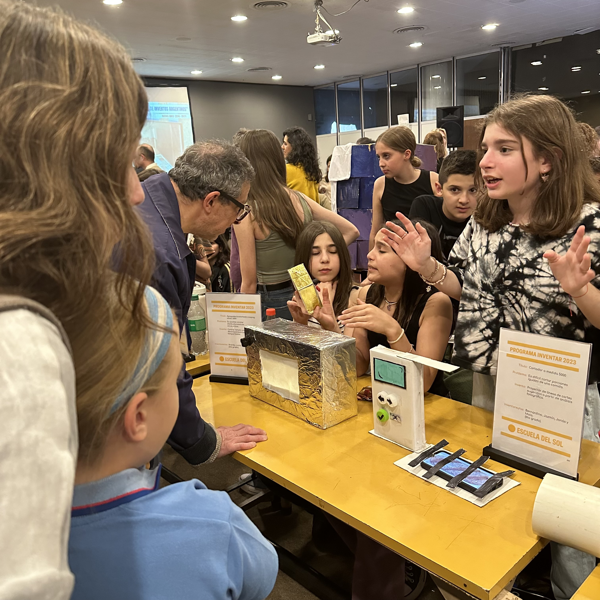

Los abuelos, cuyos nietos ya entran en Primaria, nos visitan para enseñar a los chicos los juegos de su época.


Concurso literario de la Escuela que invita a escribir cuentos y poesías a los niños y niñas de Sala de 4 y 5, de Primaria y también a los padres, madres y adultos vinculados al Sol. Un mes y medio con buzones en los pasillos mientras en los grados las maestras acompañan la tarea de escribir con amor.
Todos los días, el recreo que antecede a la hora más rica del día, la de compartir libros. Los alumnos/as se sientan donde quieren, en el salón o en el patio, y leen en silencio el libro de su elección. Luego se comparte lo leído.


La Escuela al Aire Libre (EAL) es un proyecto sostenido desde hace más de 30 años. Consiste en una salida de cuatro días a un campo cercano, en la Provincia de Buenos Aires, con los alumnos/as de 6° grado. Los contenidos curriculares se entrecruzan con las infinitas posibilidades que brindan los cuatro días al aire libre, sumado a la vivencia de las marcadas diferencias entre la ciudad y el campo.
La biblioteca escolar es un espacio fundamental de la Escuela Del Sol. Los chicos tienen acceso libre a los libros, promoviendo la autonomía lectora y el amor por la literatura desde temprana edad.


Encuentros para madres y padres, abuelos y abuelas, en donde desde la confianza y la intimidad, se busca reflexionar para actuar. Por eso decimos: "reflexión para la acción".
Todos los viernes en cada grado —y a veces más de un grado, reunidos— los docentes y sus alumnos llevan a cabo la Charla Larga: el momento de la semana que busca habilitar el "encuentro" al margen del estudio. Un espacio para escuchar, hablar y pensar en un ambiente democrático y participativo.
Esta práctica genera solidaridad, fortalece los grupos y despierta la consciencia.


Una vez por año, y desde 1983, la Escuela Del Sol se transforma en un "país" con todas las instituciones y con aire más bien de pueblito: 1º y 2º grados trabajan los derechos de los niños/as. 3º grado arma las urnas para la votación. 4º realiza los DNI con foto y datos de todos los chicos/as y todo el personal de la Escuela. 5º grado realiza en Computación las listas de los votantes. 6º tiene un papel también muy valioso ya que tiene que estudiar mucho y armar las "mesas consultoras", donde concurren adultos y niños/as para aclarar dudas. 7º por su parte, tiene el papel fundamental de formar partidos políticos con plataformas, que el ganador deberá cumplir. Es muy emocionante verlos actuar con responsabilidad y la seguridad de lo que debe hacer cada uno. Un proyecto que, para nuestro orgullo, sigue desarrollándose en nuestra escuela.
Todos los actos patrios son importantes en la Escuela Del Sol, sin lugar a dudas. Poco ensayo, mucha investigación, creatividad y autonomía, mucha música. Aprendizaje y participación. Con este material, junto con sus docentes, los alumnos/as arman el encuentro con las familias y con los otros grados.
En todos los actos, los abanderados son de 7° grado. A veces los eligen los propios compañeros. Otras veces se decide por sorteo. Las fiestas patrias de nuestra escuela son y han sido famosas —a lo largo de más de 60 años— por ser alegres, profundas y creativas. Todos, grandes y chicos, finalmente participamos cantando, bailando, disfrutando de estos momentos tan importantes.